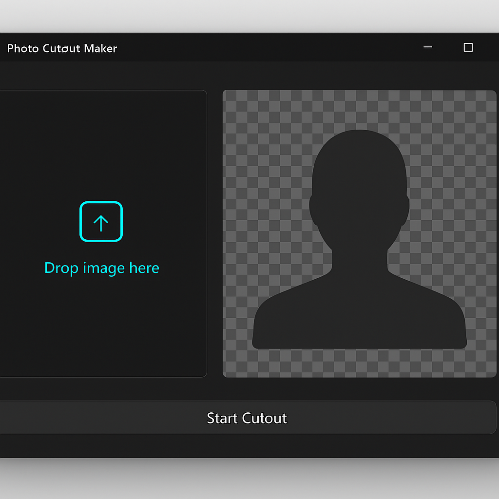

The ultimate photo cutout maker for effortless background removal.
Download PhotoCutoutMaker.zip Free · MIT license · Windows 10/11 (64-bit) · ~15 MB
Photo Cutout Maker is a free offline Windows utility that specializes in removing photo backgrounds quickly and efficiently. With its one-click AI processing, this photo cutout maker allows users to transform images into transparent PNG cutouts without any hassle. It’s designed for users who require a reliable image bg cutout tool without the need for uploads or watermarks.
This cutout tool for Windows is perfect for designers, marketers, and anyone looking to enhance their visuals. Whether you need to isolate a subject or create clean, professional images, the Photo Cutout Maker is your go-to solution for one-click bg removal.
Utilizes advanced AI for accurate background removal.
Easily produces transparent PNG images for versatile use.
Fast and efficient cutouts with just a single click.
No internet required; work anywhere, anytime.
No data collection or telemetry; your images stay private.
Small download size (~15 MB) for fast installation.
Distributed under MIT license with no ads or bundles.
User-friendly interface designed for all skill levels.
Yes, Photo Cutout Maker is completely free and open source under the MIT license.
Absolutely! The photo cutout maker is compatible with both Windows 10 and Windows 11 (64-bit).
No, you do not need admin rights to install or use the Photo Cutout Maker.
Yes, the tool is safe to use, features no ads or telemetry, ensuring your privacy.
Yes, once you create your transparent PNG cutouts, you can share them freely for personal or commercial use.
Photo Cutout Maker is open source, available on GitHub. It is licensed under the MIT license, ensuring freedom and flexibility for all users.